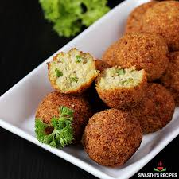

in palestine we have a lot of foods
in this page we will show u some of it:
Maqluba
A layered rice dish with meat and vegetables, often flipped upside down when served.
Mansaf
palestinean's national dish, featuring lamb cooked in a yogurt sauce and served over rice - Knafeh: A sweet dessert made with thin noodle-like pastry soaked in syrup, often layered with cheese or cream.
Falafel
Deep-fried balls made from ground chickpeas or fava beans, commonly served in pita bread with vegetables and sauces.

Hummus
A creamy dip made from blended chickpeas, tahini, lemon juice, and garlic, often enjoyed with pita bread.
for more details Please Login